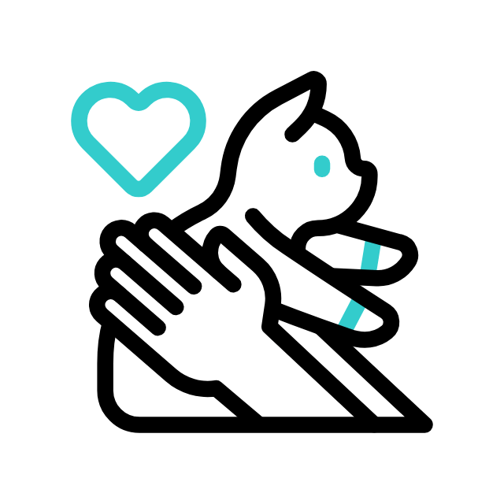

Looking to adopt a cat ?
You are welcome to walk-in.
There are many cats in need of a loving home. Please consider adopting a cat today!
adoption-process

The adoption process is simple. To adopt a cat, please fill out the application on our website. We will contact you to schedule a time to meet the cat you are interested in. Once you have met the cat and decided that you want to adopt it, we will collect a adoption fee. All of our cats are spayed or neutered, vaccinated, and microchipped. We also provide a free vet exam within 10 days of adoption.
Location: Riyadh, Saudi Arabia